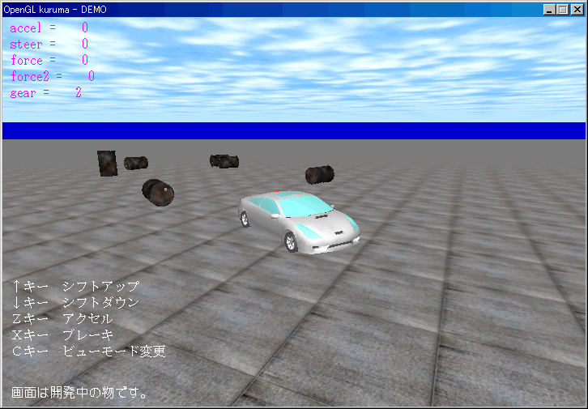

開発者向けに「 OpenGL de kuruma 」の経過で
作成したサンプル・プログラムを
コチラ
で公開しています。
3D描画 → OpenGL 1.2 + VBO
物理エンジン → ODE
音声圧縮 → OggVorbis
モデリング → フリーソフト
[2008/07/26]
準備中。
2008/07/26版
Ｚ、スペース、Enterキーで決定です。

[2005/09/28]
過去の Direct3D 版の履歴
Back